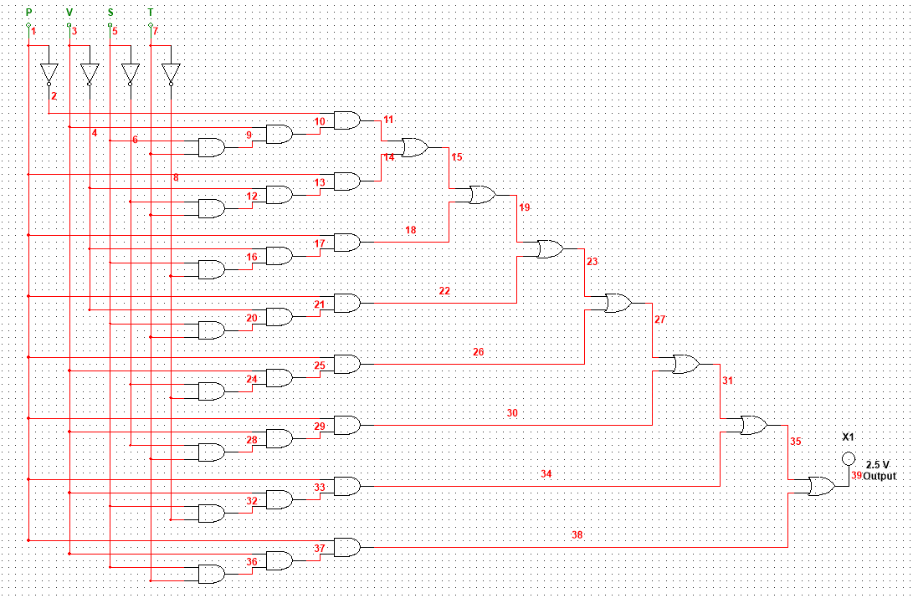
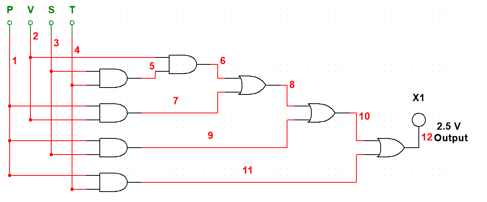
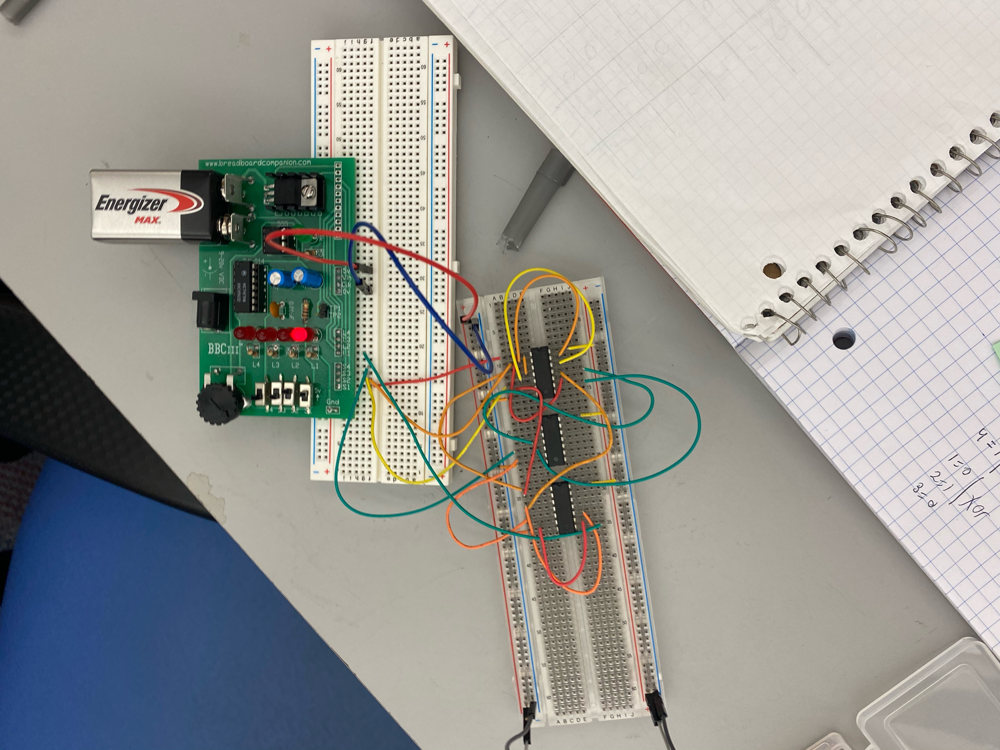

2.1.6 Majority Vote
The United States 2000 Presidential Election between George W. Bush (Republican) and Albert “Al” Gore (Democrat) will be best remembered for the controversy over who won Florida’s 25 electoral votes, and ultimately, who won the presidency. At the heart of the controversy was the use of antiquated and unreliable paper ballots. The use of these paper ballots resulted in an unacceptable amount of over-votes and under-votes. An over-vote occurs when someone’s vote is counted more than once, and an under-vote occurs when someone’s vote is not counted at all. To ensure that this type of controversy does not occur at your company, the board of directors has asked you to design an electronic voting machine. The voting machine will allow the four board members to cast their ballots and will display the pass/fail status of each of their decisions. The board of directors has four members: president, vice-president, secretary, and treasurer. Each member has a single yes/no vote. For a decision to pass, a majority of the board members must vote yes. In the event of a tie, the president’s vote is used to break the tie (if the president votes yes, the decision passes. If the president votes no, the decision fails.).
Truth Table
| President | Vice President | Secretary | Treasurer | Output |
|---|---|---|---|---|
| 0 | 0 | 0 | 0 | 0 |
| 0 | 0 | 0 | 1 | 0 |
| 0 | 0 | 1 | 0 | 0 |
| 0 | 0 | 1 | 1 | 0 |
| 0 | 1 | 0 | 0 | 0 |
| 0 | 1 | 0 | 1 | 0 |
| 0 | 1 | 1 | 0 | 0 |
| 0 | 1 | 1 | 1 | 1 |
| 1 | 0 | 0 | 0 | 0 |
| 1 | 0 | 0 | 1 | 1 |
| 1 | 0 | 1 | 0 | 1 |
| 1 | 0 | 1 | 1 | 1 |
| 1 | 1 | 0 | 0 | 1 |
| 1 | 1 | 0 | 1 | 1 |
| 1 | 1 | 1 | 0 | 1 |
| 1 | 1 | 1 | 1 | 1 |
Unsimplified Circuit
Boolean Simplification
F= P’VST + PV’S’T + PV’ST’ + PV’ST + PVS’T’ + PVS’T + PVST’ + PVST F= P’VST + PV’S’T + PV’S(T’ + T) + PVS’(T’ + T) + PVS(T’ + T) F= P’VST + PV’S’T + PV’S + PVS’ + PVS F= P’VST + PV’(S’T + S) + PV(S’ + S) F= P’VST + PV’(T + S) + PV F= P’VST + PV’T + PV’S + PV F= P’VST + P(V’T + V) +PV’S F=P’VST + P(V + T) + PV’S F=P’VST + PV + PT + PV’S F=P’VST + P(V + V’S) + PT F=P’VST + P(V + S) + PT F=P’VST + PV + PS + PT F= T(P’VS + P) + PV + PS F=T(P + VS) + PV + PS F= PT + VST + PV + PS
Simplified Circuit
Bill of Materials
74LS08 - 4x2 input AND gates (2x)
74LS32 - 4x2 input OR gates (1x)
SPDT Switch - (4x)
5mm Round LED - (1x)
Breadboarded Circuit
Conclusion
From this activity, I learned that circuits can be simplified GREATLY using Boolean algebra, and that breadboarding a circuit is a challenge in it of itself, because you have to keep track of where all of the wires go, what pins are what, and how the circuit is supposed to function as a whole. While MultiSim is an amazing tool for designing circuits, building them on breadboards is much more difficult and requires precicion and memory to do well.
Andrew Lykkken 12/4/2020